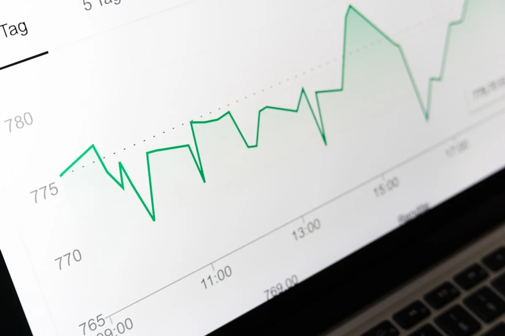
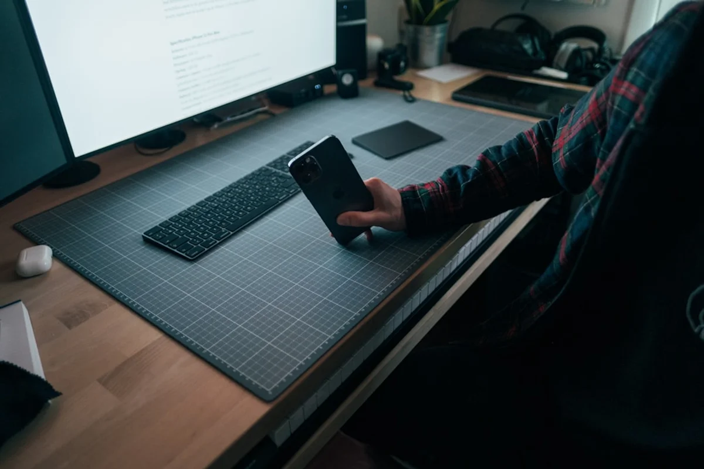

Introduction
Something shifted in early 2026, and most independent creators felt it before they understood it. Reach dropped, engagement went quiet on posts that would have performed well a year ago, and the usual playbook stopped working. The reason is not mysterious: social media algorithms 2026 independent creators are navigating have fundamentally moved away from the follow-graph model, where your audience determined your distribution, toward an interest-graph model, where the content itself earns or loses reach entirely on its own merits.
This is not a gradual evolution. It is a structural break. Platforms including Instagram, TikTok, LinkedIn, and YouTube have each, in their own way, completed this transition. For freelancers and independent creators without the budgets of agencies or brands, understanding what is actually being measured, scored, and rewarded is now a basic survival skill, not an optional upgrade.
The creator economy reached an estimated 500 billion dollars in total value in 2026, doubling from roughly 250 billion in 2023 according to industry research from Thoughtleaders.io. But the growth is no longer about more creators entering the space. It is about the maturation of business models and, critically, about who manages to stay visible when the algorithmic ground keeps shifting. This article explains the mechanics platform by platform, calls out what competitors almost never tell you, and gives independent creators a realistic framework for 2026.
The Interest Graph Is Not a Trend, It Is the New Infrastructure
The follow-graph era, where the size of your audience directly predicted how many people would see your next post, is effectively over across all major platforms. What replaced it is the interest graph: a system where each platform continuously profiles users by the content they engage with, how long they engage with it, and in what way, then distributes new content based on predicted interest match rather than social connection.
For independent creators, this is both liberating and brutal. Liberating because a creator with 2,000 followers can now reach 200,000 people if the content matches a strong interest cluster. Brutal because a creator with 80,000 followers can now be seen by almost no one if their last ten posts generated shallow engagement.
The practical implication is that follower count is now a vanity metric in the strictest algorithmic sense. What the platforms are actually scoring is the quality of signal your content generates from whoever sees it first. That first audience, usually a small test cohort of non-followers selected by interest matching, determines whether the algorithm expands distribution or stops it entirely. Every platform does this. The size of the cohort, the metrics being measured, and the speed of expansion differ by platform, but the logic is identical.
Instagram in 2026: Sends Per Reach Is the Metric That Matters
Instagram has been transparent about one signal in particular in 2026: the ratio of sends per reach. When someone shares a post to a friend via DM or to a story, that action carries far more algorithmic weight than a like or even a comment. It signals that the content was worth passing on, which Instagram treats as a proxy for genuine value.
Watch time still matters for Reels, and the platform continues to prioritise video. But the sends metric is the one that independent creators are consistently underestimating. Posts that spark the reaction of wanting to share with a specific person, whether because they are funny, useful, emotionally resonant, or perfectly timed to a cultural moment, distribute further than posts that are merely aesthetically pleasing.
For freelancers and solopreneurs using Instagram as a client acquisition channel, this reframes what good content looks like. A carousel post explaining a very specific professional problem, one that a client would forward to a colleague, outperforms a beautiful product photo that gets saved but not shared. Instagram has also continued investing in social search in 2026, making keyword placement in captions and alt text relevant for discoverability beyond the feed itself.
Posting frequency still correlates with reach. Data from Buffer found that creators who posted consistently across at least 20 out of 26 weeks saw roughly 450% more engagement per post than those who posted in only four weeks or fewer. On Instagram, irregular posting does not just reduce overall volume. It appears to suppress individual post performance as the algorithm downweights accounts with unpredictable activity patterns.

TikTok in 2026: The For You Feed Changed Its Rules Mid-Year
TikTok's algorithm shift in early 2026 caught many creators off guard. For years, the For You feed was the great democratiser, sending content to strangers based almost entirely on completion rate and rewatch signals. That mechanic has not disappeared, but a new layer was added: follower engagement now contributes meaningfully to initial distribution.
In practical terms, this means TikTok started seeding new content from a creator to a portion of their existing followers before expanding to the interest-matched cohort of non-followers. If those existing followers engage quickly and deeply, the algorithm treats it as a quality signal and expands reach. If they scroll past, the post is throttled earlier in the distribution chain than it would have been under the old model.
Approximately 70% of TikTok views still come from the For You feed rather than the Following tab, so the interest graph remains central. But the change effectively means that building a genuine follower community on TikTok now has direct algorithmic value again, not just social value. Creators who had been treating their follower base as an incidental byproduct of viral content are finding this adjustment costly.
Completion rate remains critical, and the threshold that triggers expanded distribution appears to sit above 80% on shorter videos (under 30 seconds) and above 55% on videos between 60 and 90 seconds. Longer TikTok content (three to five minutes) is still being promoted on a different scoring curve, particularly in categories like education, cooking, and travel, where TikTok is actively trying to compete with YouTube.
LinkedIn in 2026: Dwell Time, Professional Relevance, and the Video Push
LinkedIn underwent some of the most consequential algorithm changes of any platform in the 2025 to 2026 period. The platform made a deliberate push away from content going broadly viral to unrelated professional audiences, and toward reaching smaller but more relevant professional communities.
Dwell time is the headline metric: specifically, how long users spend reading a post before scrolling. Research cited across multiple industry sources points to posts that hold attention for at least 61 seconds generating engagement rates around 15.6%, significantly higher than posts that are skimmed in under 20 seconds. This rewards longer, substantive posts over punchy one-liners, which is almost the reverse of what performs on TikTok or Instagram.
LinkedIn also accelerated its video push. Native video posted directly to the platform receives preferential distribution over external links, and vertical short-form video is being actively promoted in a TikTok-adjacent feed experience that LinkedIn launched for mobile users. For independent consultants, coaches, and freelancers who have traditionally leaned on long-form text posts, this is a meaningful reason to start experimenting with short professional video.
One angle worth knowing that rarely appears in competitor articles: LinkedIn's algorithm in 2026 penalises posts that attract engagement from users who are far outside the creator's stated professional category. If a software consultant's post about productivity gets reshared widely by audiences in unrelated fields, the algorithm can actually reduce subsequent reach rather than amplify it. LinkedIn is explicitly optimising for professional relevance clustering, not viral spread. This is good news for independent creators who serve a narrow niche and want to reach exactly that niche, rather than everyone.

YouTube in 2026: The Recommendation Engine Rewards Retention Curves, Not Just Duration
YouTube has long been the platform where the algorithm is most studied and most misunderstood. In 2026, the key evolution is in how watch time is measured. Total watch duration still matters, but YouTube's recommendation engine has become sophisticated enough to read the retention curve within a video rather than just the aggregate watch time.
A ten-minute video where 60% of viewers watch for eight minutes and then drop signals something very different from a ten-minute video where viewers drop steadily from the start but average eight minutes because a small percentage watch twice. The algorithm now distinguishes these patterns and uses the shape of the curve to determine whether a video earns further recommendation.
For independent creators, the practical implication is that the first 90 seconds of a YouTube video have become the most algorithmically consequential section. If the retention curve shows a sharp drop in the first two minutes, the video is unlikely to receive significant recommendation traffic regardless of how engaging the rest of the content is. Creators who audit their own analytics and find consistent early drop-offs are almost certainly facing this issue.
YouTube Shorts continues to operate on a separate algorithm that more closely resembles TikTok's completion-rate logic. Shorts and long-form content do not directly cross-promote each other in 2026 as many creators assumed they would. Building a Shorts audience does not automatically feed subscribers into a long-form channel and vice versa, which means independent creators maintaining both formats are essentially managing two separate audience development tracks.
The Contrarian Truth: Algorithmic Reach Is a Borrowed Asset
Here is the angle that almost no platform-by-platform algorithm guide discusses because it undermines the entire premise of optimising for algorithms in the first place: reach delivered by an algorithm belongs to the platform, not to the creator.
Every creator who has built their income entirely on algorithmic distribution has, at some point, experienced a platform change that halved their reach overnight. This is not a bug. It is the fundamental nature of the relationship between creators and platforms. The platform owns the distribution infrastructure. The algorithm is a policy, and policies change.
In 2026, the creators who are genuinely resilient are not those with the best algorithmic performance. They are the ones who use algorithmic reach to build assets the platform cannot revoke: email lists, paid communities, direct client relationships, repeat buyers, and in-person audiences. The creator economy's growth to 500 billion dollars has been driven partly by this shift, as creators increasingly treat social media as a top-of-funnel acquisition tool rather than the entire business.
For independent freelancers and consultants, this means the ideal use of Instagram, TikTok, LinkedIn, and YouTube in 2026 is as a channel that introduces you to people and then moves them somewhere you control: a newsletter, a private community, a portfolio site, a consultation booking page. Optimising for algorithmic reach while building nothing off-platform is the equivalent of building a house on rented land.
Emarketer forecasts that social media creator revenue will increase 16.2% in 2026 to reach 20.6 billion dollars. The creators capturing the largest share of that growth are disproportionately those who have diversified their revenue away from platform-dependent ad splits and toward owned products, services, and communities.
Practical Numbers: What Consistency and Frequency Actually Look Like in 2026
Algorithmic strategy without practical numbers is just theory. Here is what the data currently suggests for independent creators managing output alone, without a team:
- Instagram: Three to five feed posts per week (mix of carousels and Reels), with stories used daily for low-effort consistency signals. The sends-per-reach metric improves when carousel posts address specific, shareable problems rather than broad inspiration.
- TikTok: A minimum of four videos per week to maintain the follower engagement layer introduced in 2026. Completion rates above 80% on videos under 30 seconds are the target threshold for expanded distribution. Posting at off-peak hours (early morning local time) has shown less advantage in 2026 as TikTok's global distribution has become more time-agnostic.
- LinkedIn: Two to three posts per week with at least one longer text post (400 to 800 words) and one native video per week. Commenting substantively on others' posts within the first hour of their publication continues to increase profile visibility through a secondary signal the platform calls contribution score.
- YouTube: One long-form video per week is sufficient for algorithmic momentum if retention curves are healthy. For Shorts, three to five per week is the recommended frequency, treated as a separate channel strategy rather than a promotional arm for long-form content.
These numbers are not targets to hit for their own sake. They represent the approximate minimum thresholds at which each platform's algorithm begins treating an account as active enough to include in interest-graph recommendation pools. Posting less does not just reduce output. It can remove an account from recommendation consideration entirely during the periods of inactivity.
Social Search and AEO: The Algorithm Layer Most Creators Are Ignoring
The fastest-growing discovery mechanism on social platforms in 2026 is not the For You feed or the Explore tab. It is social search, and most independent creators are not optimising for it at all.
Users increasingly search inside Instagram, TikTok, and LinkedIn the way they previously searched Google. They type a question or a concept, and they expect the platform to surface relevant content from creators they do not follow. This is distinct from the interest-graph recommendation feed and operates on a keyword-relevance model closer to traditional SEO.
Answer Engine Optimisation (AEO), a concept gaining significant traction in marketing strategy circles in 2026, extends this further: it refers to structuring content so that it directly answers a specific question, making it surfaceable not only in social search but in AI assistant responses from tools like ChatGPT, Perplexity, and Google AI Overviews.
For independent creators, the practical application is straightforward. Using specific, searchable language in captions, video titles, and on-screen text (rather than clever or abstract language that only makes sense in context) makes content discoverable through social search without any additional effort. A travel photographer captioning a post as "best time to visit the Amalfi Coast in September" will surface in social search for that query. The same photo captioned "golden light and good vibes" will not.
Sprout Social identified social search optimisation as one of the defining strategy shifts of 2026, noting that the smartest creators are building content that functions simultaneously as a feed post, a search result, and a conversational AI answer, three distribution channels addressed with one piece of content.
Final Thoughts
The honest summary of social media algorithms in 2026 for independent creators is this: the platforms have become more powerful as distribution tools and simultaneously more unreliable as the sole foundation of a creative business. The interest graph genuinely does give a single creator the ability to reach a large, relevant audience without a large following. But that reach is rented, conditional, and subject to change without notice.
The creators navigating 2026 well are the ones treating algorithmic reach as a starting point rather than an endpoint. They understand the specific mechanics of each platform well enough to generate quality signals consistently, they post with enough regularity to stay inside recommendation pools, and they redirect the attention they earn toward assets they own outright.
For anyone running a freelance practice, a consultancy, or a creative service business, social media in 2026 is best understood as the world's most efficient cold outreach tool, one that works at scale, costs primarily time rather than money, and rewards genuine expertise and specificity over broadcast-style content. That is a good deal, as long as the relationship with the platform is understood clearly for what it is.
If this breakdown was useful, sharing it with another freelancer or independent creator navigating the same questions would be a genuinely good use of a few seconds.
Frequently Asked Questions
Do followers still matter for social media algorithms in 2026?
Yes, but in a different way than before. On most platforms, followers no longer guarantee reach directly. However, on TikTok specifically, follower engagement now contributes to initial distribution before content is expanded to non-followers. On LinkedIn, follower quality and professional relevance influence how content is seeded. The shift to interest-graph ranking means that content quality and engagement signals matter more than raw follower count, but a genuinely engaged follower base still provides an algorithmic advantage, particularly at the distribution initiation stage.
What is the most important metric for Instagram in 2026?
According to Instagram's own guidance and widely reported creator data, sends per reach is the highest-weight engagement signal in 2026. When a viewer shares your post to another user via DM or to their story, it signals content worth passing on, and Instagram weights this action significantly above likes, comments, or saves. Creating content that is genuinely shareable, useful, funny, or emotionally resonant in a way that prompts forwarding behaviour is the most direct lever for improving Instagram reach under the current algorithm.
How often should an independent creator post on LinkedIn in 2026?
The recommended frequency for independent creators on LinkedIn in 2026 is two to three posts per week. At least one post should be a longer text post of 400 to 800 words to benefit from LinkedIn's dwell time signal, and at least one should be a native video upload. Additionally, commenting substantively on other posts within the first hour of publication contributes to a secondary visibility metric LinkedIn tracks as contribution score. Posting less than twice a week appears to reduce inclusion in LinkedIn's professional relevance recommendation pools.
What is social search optimisation and why does it matter for creators in 2026?
Social search optimisation means writing captions, titles, and on-screen text using specific, searchable language so that content surfaces when users search inside platforms like TikTok, Instagram, and LinkedIn. In 2026, a growing percentage of content discovery happens through in-platform search rather than algorithmic feeds. Creators who use question-style or keyword-rich language in their content become discoverable to users who do not follow them and are actively searching for information on that topic. This is distinct from feed optimisation and represents a second distribution channel that requires almost no additional content creation effort.
Can a small creator still go viral on TikTok in 2026?
Yes. TikTok's For You feed still accounts for approximately 70% of views on the platform, and it continues to distribute content to non-followers based on interest matching and completion rate. The 2026 algorithm change added a follower engagement layer at the start of the distribution process, meaning existing followers are seeded the content first, but this does not prevent content from reaching large audiences. A creator with 500 followers can still achieve widespread distribution if the content generates strong completion rates and early engagement signals from that initial cohort.
What is the creator economy worth in 2026?
The creator economy is estimated at over 500 billion dollars in total value in 2026, roughly double its value of approximately 250 billion dollars in 2023. Within this, social media creator revenue specifically is forecast by Emarketer to grow 16.2% in 2026 to reach 20.6 billion dollars. The growth is attributed less to new creators entering the market and more to the maturation of business models, including owned products, paid communities, and direct services that reduce dependence on platform-driven ad revenue.